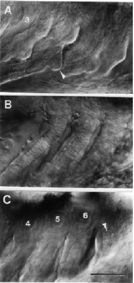

Modified from:
Kimmel et al., 1955.
Developmental Dynamics 203:253-310. Copyright © 1995 Wiley-Liss, Inc.
Reprinted only by permission of Wiley-Liss, a subsidiary of John Wiley &
Sons, Inc.
Fig. 42. Branchial arches develop late in embryogenesis. Left side Nomarski views, dorsal to the top, anterior to the left, at the protruding-mouth stage (72 h). To avoid confusion, keep in mind that in fish (but not necessarily in tetrapod species that do not develop gills) branchial arch and pharyngeal arch numbering systems differ. By convention, branchial arch 1 is the same as pharyngeal arch 3 and contains ceratobranchial cartilage 1 and aortic arch 3. A: A superficial view of the four gill-bearing branchial arches (branchials 1-4) to show the clefts between them and developing buds of gill filaments (the arrowhead indicates a bud emerging from the posterior surface of branchial arch 2). The third aortic arch (3) is in focus within the first branchial arch. B: A deeper plane of focus reveals a gradient of cartilage development in branchial arches 1-3. To the left, branchial arch 1 includes a long stretch of differentiated cartilage (this cartilage being ceratobranchial 1). In the next arch, ceratobranchial 2 is less differentiated, and in branchial arch 3, to the right, the ceratobranchial is represented by only a row of precartilaginous mesenchymal cells. C: The posterior-most branchial does not follow the same gradient rule; ceratobranchial cartilage 5 (arrowhead), the last cartilage of the series, is further developed than the third or fourth ceratobranchials at the same stage. Aortic arches (numbered 4-6 in the figure) are in focus dorsally above the precartilage masses. The fifth branchial arch does not possess an aortic arch (that would be numbered aortic arch 7, were it to exist). Neither will the fifth branchial arch bear gills. Scale bar: 50 µm.

Figure 42